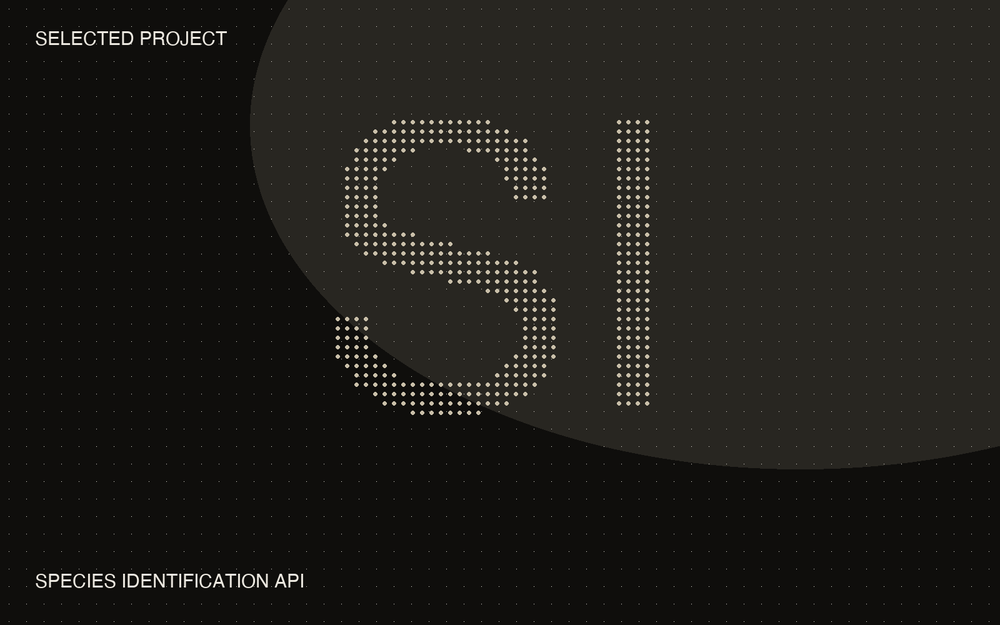

← Projects
Back to
All projects
Thesis project 04 / 04
Species ID
M.Sc. thesis — a CNN identifying regional species, served as a self-improving API.

- 2023M.Sc. Smart Systems, Hochschule Furtwangen
- End to enddata collection through to a served API
- Continuousretraining as new labeled data arrives
The model
A convolutional network identifying regional plant and insect species from photographs — trained, evaluated, and served behind an API with continuous retraining, so the model improves as new labeled data arrives.
Why it counts
An early end-to-end ML system: data collection and labeling, model training, API serving, and the retraining loop — the same shape as the production systems I build today, just a few years earlier.
- School
- Hochschule Furtwangen, Germany
- Stack
-
- Python
- Computer vision · CNN
- REST API
- Continuous retraining